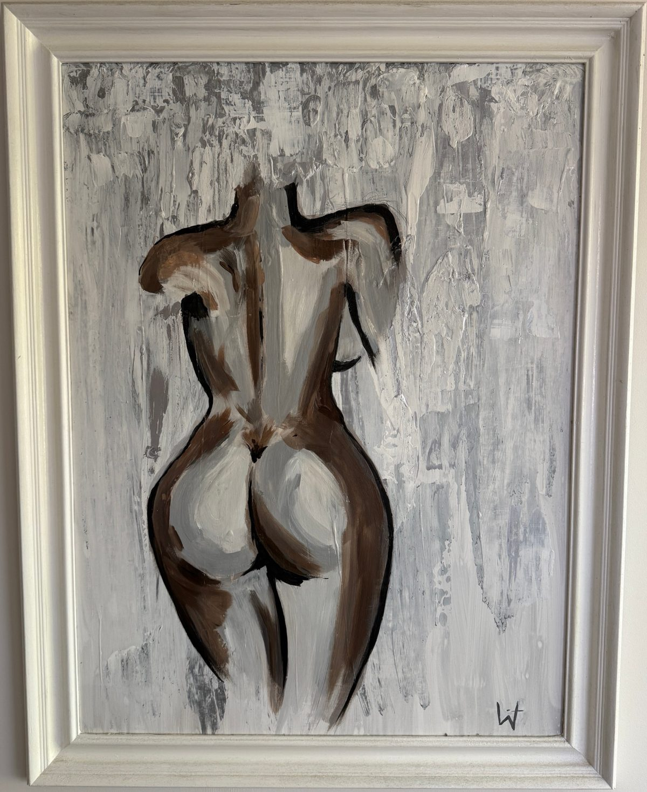

Achtergevel
april • 2023
De natuurlijke architectuur van het vrouwelijke lichaam.
Hoe ik het maakte
Het schilderij heb ik gemaakt op een canvas die ik bij een tweedehandswinkel heb gekocht. De achtergrond is gemaakt met verf en een zilvere spuitbus. Daarna heb ik de vormen met een penseel geschilderd. Dit heb ik op hetzelfde moment gemaakt als het andere vrouwlijkelichaam in deze galerij.
Wat ik wilde laten zien
Ik heb ge probeerd de natuurlijke schoonheid van het vrouwelijke lichaam te tonen door middel van een eenvoudige, maar krachtige compositie. Door het gebruik van robuuste penseelstrepen heeft het diepte verschil waardoor het schilderij er echt uitspringt.